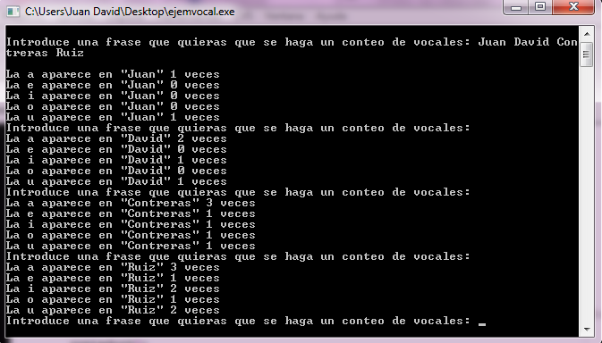

Se pretende crear un programa con el uso de cadena y contadores, para asi indicar el numero de vocales con el que cuenta esa cadena
Pseudocódigo
Proceso principal
vocales[5]={0};
tvocales[]={'a','e','i','o','u'};
Hacer
Escribir("Introduce una frase que quieras que se haga un conteo de vocales: ");
Leer cadena;
contador=0;
Mientras cadena[contador]!='\0'
Para (contador1=0;contador1 < 5;contador1++)
si (cadena[contador]==tvocales[contador1])
vocales[contador1]++;
contador++;
FinSi
FinPara
Para(contador=0;contador<5;contador++)
Escribir("La %c aparece en \"%s\" %d veces",tvocales[contador],cadena,vocales[contador]);
FinPara
Mientras(vocales);
getchar();
regresar 1;
FinProceso
Diagrama de Flujo

Código en Lenguaje C
Este programa muestra la suma de todos los numeros enteros pares que hay del 1-100.
#include <stdio.h>
#define MAX_CADENA 100
int main()
{
char cadena[MAX_CADENA];
int contador1,contador;
int vocales[5]={0};
char tvocales[]={'a','e','i','o','u'};
do
{
printf("\nIntroduce una frase que quieras que se haga un conteo de vocales: ");
scanf("%s",&cadena);
contador=0;
while (cadena[contador]!='\0')
{
for(contador1=0;contador1<5;contador1++)
if(cadena[contador]==tvocales[contador1])
vocales[contador1]++;
contador++;
}
for(contador=0;contador&5;lt;contador++)
{
printf("\nLa %c aparece en \"%s\" %d veces",tvocales[contador], cadena,vocales[contador]);
}
}while(vocales);
getchar();
return 1;
}
Salida del programa
